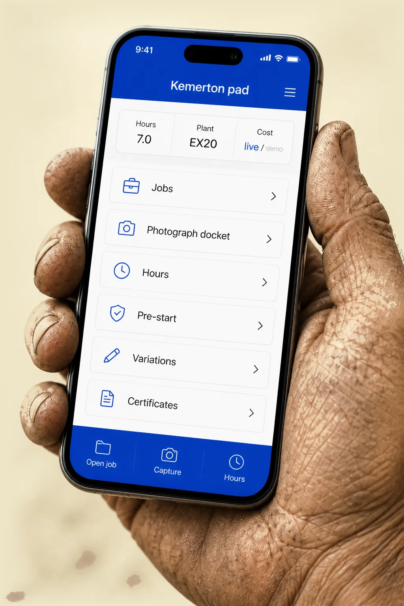

We digitise the work that currently lives in spreadsheets, pads, forms, and logins that do not talk — then gets lost. Start with a receipt-parser pilot, or go all the way to jobs, costing, plant, variations, certificates, and the ute. Xero stays the books.
We walk the yard first.
Book a yard visit →